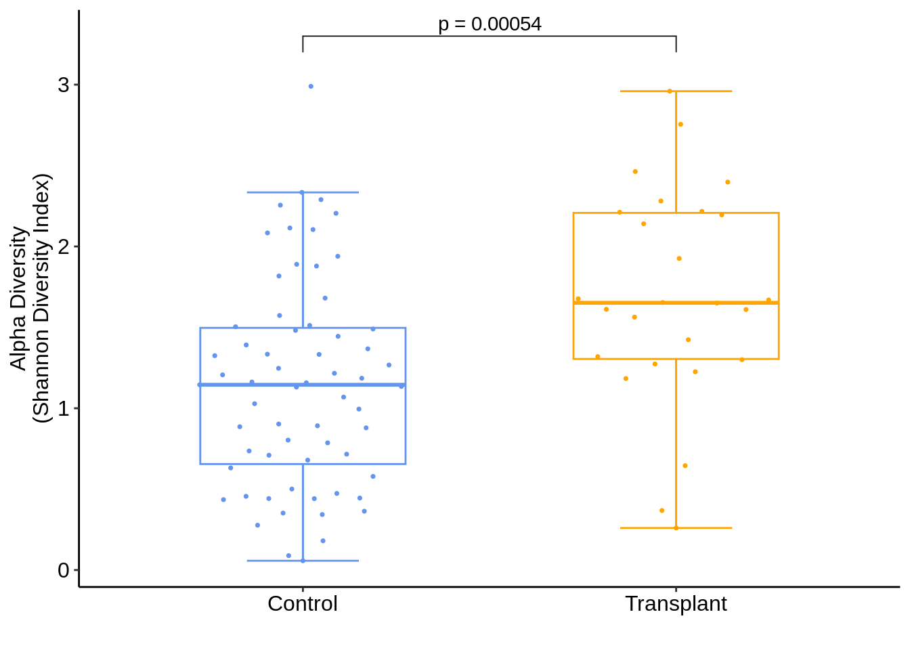
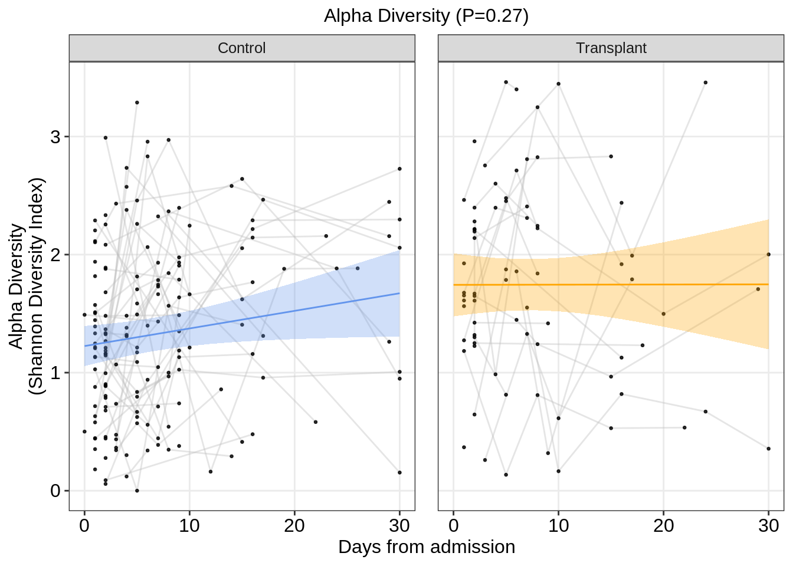
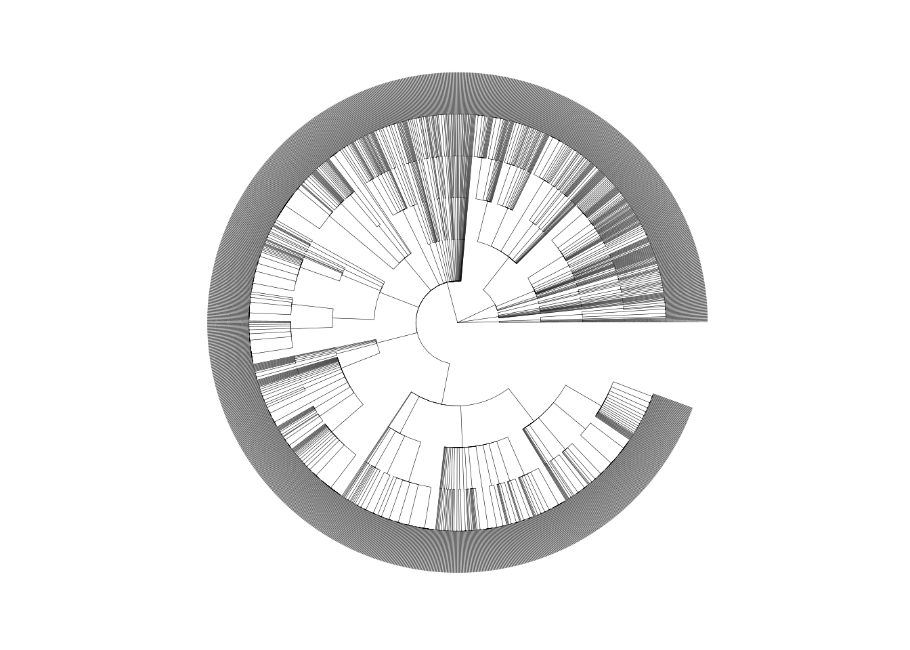
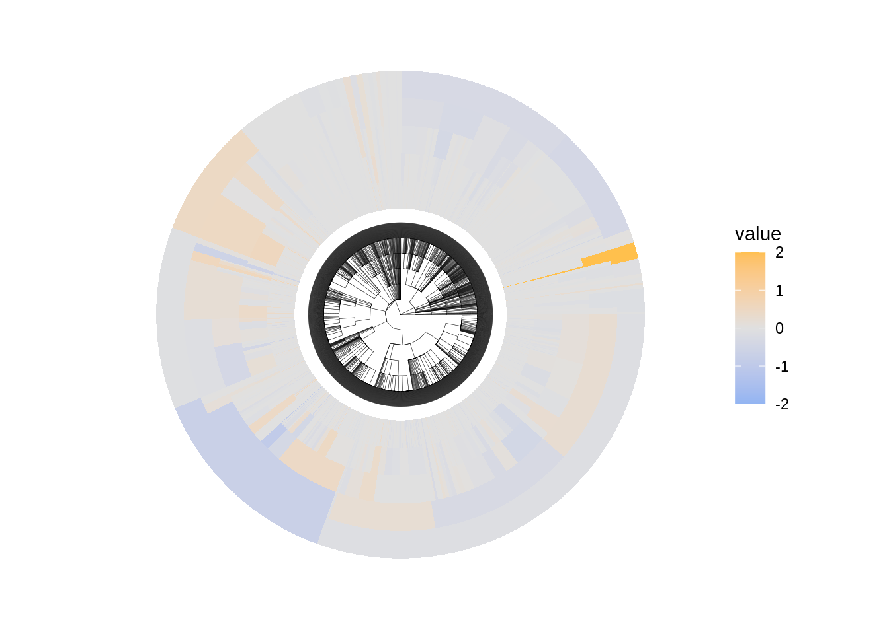
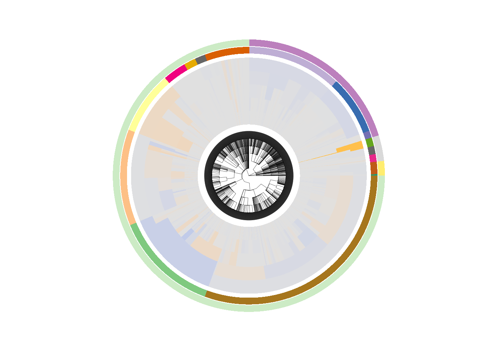
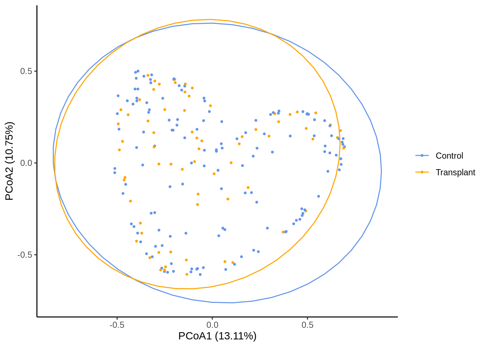

library(rlang)
library(tidyverse)
library(ggpubr) ## For stat_cor
library(scales) ## For log scaling of y axis (makes it look pretty)
library(ggridges) ## geom_density_ridges is really nice for distribution graphs
library(ggbeeswarm) ## For geom_quasirandom(), the best looking jitter plots
library(readxl)
TrajGrpCol <- c("1" = "#639A21", "2" = "#39828C", "3" = "#6371AD", "4" = "#BD7D31", "5" = "#9C3418")
## Defined colors of the Trajectory Groups used across most IMPACC manuscripts
nasal_metagenomics_rowfeature <- read_csv("/data/nasal-metagenomics/current/nasal-metagenomics-AllGenera-RowFeatures.csv", skip = 1)
nasal_metagenomics_metadata <- read_csv("/data/nasal-metagenomics/current/nasal-metagenomics-Metadata.csv") %>%
filter(sample_status != "IMPACC sample assayed and failed QC")
nasal_metagenomics_counts <- read_csv("/data/nasal-metagenomics/current/nasal-metagenomics-BacterialTaxon-Counts_RPM.csv" ) %>%
filter(sample_id %in% nasal_metagenomics_metadata$sample_id) %>%
column_to_rownames("sample_id")
nasal_metagenomics_counts_everything <- read_csv("/data/nasal-metagenomics/current/nasal-metagenomics-AllGenera-Counts_RPM.csv" ) %>%
filter(sample_id %in% nasal_metagenomics_metadata$sample_id) %>%
column_to_rownames("sample_id")
### Load all clinical data straight out of data
clinical_data1 <- read_csv("/data/clinical/current/2023-01-01-locked/2023-01-01-impacc-clin-sample-locked.csv")
clinical_data2 <- read_csv("/data/clinical/current/2023-01-01-locked/2023-01-01-impacc-clin-individ-locked.csv")
tj_pred <- read_csv("/data/clinical/current/2023-01-01-locked/2023-01-01-impacc-clin-individ-locked.csv") %>%
distinct(participant_id, trajectory_group)
clinical_data3 <- read_csv("/data/clinical/current/2023-01-01-locked/2023-01-01-impacc-clin-event-locked.csv")
clinical_data <- merge(clinical_data1, clinical_data2, by = "participant_id")
clinical_data <- merge(clinical_data, clinical_data3, by= c("event_id", "participant_id"))
transplant_meta <- read_excel("/users/cmaguire/immunosuppression_meta.xlsx") %>% rename(participant_id = id) %>%
mutate(participant_id = gsub("−", "-", participant_id)) %>%
filter(!participant_id %in% c("002-0022", "007-0008", "001-0013", "010-0009", "004-0041", "005-0047"))
keep_samples <- clinical_data$sample_id[clinical_data$participant_id %in% transplant_meta$participant_id]
col_palette = c("cornflowerblue",
"orange")
library(RColorBrewer)
n <- 60
qual_col_pals = brewer.pal.info[brewer.pal.info$category == 'qual',]
col_vector = unlist(mapply(brewer.pal, qual_col_pals$maxcolors, rownames(qual_col_pals)))
out_dir <- "../output/"Simplified_SOT
SOT Metagenomics (Figure 6) Panels
Data Load
Phylogenetic Labeling
### This file need to be downloaded from NCBI Taxonomy
nodes <- read.table("/scratch/metagenomics/all_ncbi_tax_id/nodes.dmp",sep= "|", header = F) %>%
dplyr::rename("tax_id" = "V1",
"phylo_level" = "V3") %>%
mutate(phylo_level = gsub("\t", "", phylo_level))
nodes <- nodes[, !grepl("V", colnames(nodes))]
taxa_table <- read.table("/scratch/metagenomics/all_ncbi_tax_id/tax_report_everything_SOT.txt",sep= "\t", header = T, fill = TRUE)
taxa_table <- taxa_table[, !grepl("X", colnames(taxa_table))]
declared_levels <- rev(c("superkingdom", "kingdom", "phylum", "order", "class", "family", "genus"))
simplified.taxa.out <- as.data.frame(matrix(ncol=length(declared_levels),nrow=0))
colnames(simplified.taxa.out) <- declared_levels
accepted_nodes <- nodes %>%
filter(phylo_level %in% declared_levels) %>%
distinct()
for(i in 1:nrow(taxa_table)){
print(paste0("On Taxa ", i, "/", nrow(taxa_table)))
tmp.lineage <- unlist(str_split(taxa_table$lineage[i], " "))
tmp.lineage <- tmp.lineage[tmp.lineage %in% accepted_nodes$tax_id]
names(tmp.lineage) <- accepted_nodes$phylo_level[match(tmp.lineage, accepted_nodes$tax_id)]
tmp.lineage <- tmp.lineage[!duplicated(names(tmp.lineage))]
simplified.taxa.out <- plyr::rbind.fill(simplified.taxa.out, as.data.frame(t(as.data.frame(tmp.lineage))))
}
simplified.taxa.out.name <- simplified.taxa.out
all_tax_ids <- as.data.frame(unique(unlist(simplified.taxa.out)))
all_tax_ids <- as.data.frame(all_tax_ids[complete.cases(all_tax_ids),])
taxa_table2 <- read.table("/scratch/metagenomics/all_ncbi_tax_id/tax_report_everything_SOT.txt",sep= "\t", header = T, fill = TRUE)
taxa_table2 <- taxa_table2[, !grepl("X", colnames(taxa_table2))]
for(i in 1:ncol(simplified.taxa.out.name)){
simplified.taxa.out.name[,i] <- mgsub::mgsub(simplified.taxa.out.name[,i],
pattern = paste0("^", taxa_table2$taxid, "$"),
replacement = c(taxa_table2$taxname))
}
simplified.taxa.out.name$tax_id <- simplified.taxa.out$genus
write.csv(simplified.taxa.out.name %>% relocate(tax_id), "additional_files/assembled_phylo_named_SOT.csv", row.names = F)Panel D
stat.test <- nasal_metagenomics_metadata %>%
right_join(transplant_meta, by = "participant_id") %>%
left_join(clinical_data %>% select(sample_id, event_type)) %>%
filter(event_type == "Visit 1") %>%
mutate(transplant_status = ifelse(transplant_status == 1, "Transplant", "Control")) %>%
mutate(transplant_status = factor(transplant_status)) %>%
as.data.frame() %>%
compare_means(data = ., alpha_diversity~transplant_status, "wilcox.test", p.adjust.method = "fdr") %>%
mutate(y.position = 3.3)
p1 <- nasal_metagenomics_metadata %>%
right_join(transplant_meta, by = "participant_id") %>%
left_join(clinical_data %>% select(sample_id, event_type)) %>%
filter(event_type == "Visit 1") %>%
mutate(transplant_status = ifelse(transplant_status == 1, "Transplant", "Control")) %>%
mutate(transplant_status = factor(transplant_status)) %>%
ggplot(aes(x=transplant_status, y=alpha_diversity, color = transplant_status)) +
stat_boxplot(aes(color=transplant_status),
geom="errorbar", width=0.3) +
geom_boxplot(aes(color=transplant_status), fill="white",
outlier.shape=NA, width=0.55) +
ggbeeswarm::geom_quasirandom(
aes(color=transplant_status),
size=0.6, width=0.3) +
stat_pvalue_manual(stat.test, label = "p = {p.adj}") +
xlab(" ") +
ylab("Alpha Diversity\n(Shannon Diversity Index)") +
scale_color_manual(values = col_palette) +
theme(legend.position = "none") +
theme_classic() +
theme(
plot.title = element_text(hjust = 0.5, size=12, face="plain"),
axis.text = element_text(size=12, color="black"),
text = element_text(size=12),
legend.position = "none"
)
p1
ggsave(paste0(out_dir, "panelD.pdf"), width = 3, height = 3.5)Panel E
model.data <- nasal_metagenomics_metadata %>%
right_join(transplant_meta, by = "participant_id") %>%
left_join(clinical_data %>% select(sample_id, event_date, event_type)) %>%
filter(event_date <= 30) %>%
filter(!grepl("Escalation", event_type)) %>%
mutate(transplant_status = ifelse(transplant_status == 1, "Transplant", "Control")) %>%
left_join(clinical_data %>% select(sample_id, enrollment_site)) %>%
mutate(transplant_status = factor(transplant_status),
enrollment_site = factor(enrollment_site),
participant_id = factor(participant_id)) %>%
filter(!is.na(alpha_diversity)) %>%
left_join(tj_pred)Joining with `by = join_by(sample_id)`
Joining with `by = join_by(sample_id)`
Joining with `by = join_by(participant_id)`########### LINEAR MODELING #######################################
library(nlme)
Attaching package: 'nlme'
The following object is masked from 'package:dplyr':
collapselibrary(ggeffects)
lme.formula.test <- formula(paste0("alpha_diversity~event_date*transplant_status+trajectory_group"))
fit <- lme(fixed = lme.formula.test,
random = ~1|participant_id, data = model.data)
stat_anova <- anova(fit, type = "marginal")
pred <- ggpredict(fit, c("event_date", "transplant_status"), type = "fixed",
ci.lvl = 0.95)
colnames(pred) <- gsub("x", "event_date", gsub("group", "transplant_status", colnames(pred)))
p2 <- model.data %>%
ggplot(aes(x=event_date, y=alpha_diversity)) +
geom_line(inherit.aes = F, aes(x=event_date, y=alpha_diversity,
group=participant_id), color="gray", alpha=0.4) +
geom_point(color="black", shape=19, size=0.5, alpha=0.8) +
geom_line(inherit.aes = F, data = pred,
aes(x=event_date, y=predicted,
color = transplant_status),
alpha = 1) +
geom_ribbon(inherit.aes = F, data = pred,
aes(x=event_date, ymin = conf.low,
ymax = conf.high, fill = transplant_status),
alpha = 0.3) +
ylab("Alpha Diversity\n(Shannon Diversity Index)") +
scale_color_manual(values = col_palette) +
scale_fill_manual(values = col_palette) +
xlab("Days from admission") +
theme_bw() +
facet_wrap(~transplant_status) +
labs(color=NULL, fill = NULL) +
theme(
plot.title = element_text(hjust = 0.5, size=12, face="plain"),
axis.text.x = element_text(size=12, color="black"),
axis.text.y = element_text(size=12, color="black"),
text = element_text(size=12),
panel.spacing = unit(0.5, "cm"),
panel.grid.minor=element_blank(),
legend.position = "none"
) + ggtitle(paste0("Alpha Diversity (P=", signif(stat_anova$`p-value`[5], 2), ")"))
p2
ggsave(paste0(out_dir, "panelE.pdf"), width = 5.4, height = 3.4)Panel F
Modeling
library(nlme)
library(lme4)
library(lmerTest)
nasal_long <- nasal_metagenomics_counts_everything %>%
rownames_to_column("sample_id") %>%
left_join(clinical_data %>% select(sample_id, participant_id, event_type)) %>%
filter(event_type == "Visit 1") %>%
filter(participant_id %in% transplant_meta$participant_id) %>%
select(-event_type, -sample_id) %>%
pivot_longer(cols = -participant_id, values_to = "nt_rpm", names_to = "name") %>%
left_join(clinical_data2) %>%
left_join(transplant_meta)
phylo_info <- read.csv("additional_files/assembled_phylo_named_SOT.csv") %>%
distinct() %>%
mutate(tax_id = as.numeric(tax_id)) %>%
mutate(kingdom = ifelse(is.na(kingdom), superkingdom, kingdom))
out.p <- data.frame()
for(i in 2:ncol(phylo_info)){
active_level = colnames(phylo_info)[i]
## Background corrected
nasal_metagenomics_counts_long <- nasal_long %>%
left_join(nasal_metagenomics_metadata) %>%
left_join(phylo_info %>% dplyr::rename("name" = "tax_id") %>%
mutate(name = as.character(name))) %>%
group_by(.data[[active_level]], sample_id) %>%
dplyr::summarize(nt_rpm = sum(nt_rpm, na.rm = TRUE)) %>%
mutate(log2_nt_rpm = log2(nt_rpm + 1)) %>%
pivot_wider(names_from = .data[[active_level]], values_from = log2_nt_rpm, id_cols = sample_id) %>%
pivot_longer(cols=-sample_id) %>%
left_join(clinical_data %>% select(sample_id, participant_id, event_type)) %>%
filter(event_type == "Visit 1") %>%
filter(participant_id %in% transplant_meta$participant_id) %>%
left_join(clinical_data2) %>%
left_join(transplant_meta) %>%
mutate(value = ifelse(is.na(value), 0, value))
tmp.out.p <- data.frame()
for(i in unique(nasal_metagenomics_counts_long$name)){
model.data <- nasal_metagenomics_counts_long %>%
filter(name == i) %>%
mutate(transplant_status = factor(transplant_status),
value = as.numeric(value), ## Change measure here
sex = as.factor(sex),
admit_age = as.numeric(admit_age),
enrollment_site = as.factor(enrollment_site))
model_formula <- formula(paste0("value ~ transplant_status"))
fit <- try(lme(fixed = model_formula,
random = ~1|enrollment_site, data = model.data), silent = T)
if(class(fit) == "try-error"){
next
}
tmp.out.p <- rbind.data.frame(tmp.out.p, data.frame("Taxa" = i,
"TG.adj.P" = anova(fit, type = "marginal")$`p-value`[2],
"coefficient" = fit$coefficients$fixed[2],
"Phylo_level" = active_level))
}
tmp.out.p$TG.adj.P.adj <- p.adjust(tmp.out.p$TG.adj.P, "fdr")
out.p <- rbind.data.frame(out.p, tmp.out.p)
}
out.p <- out.p[out.p$Taxa != "NA", ]
out.p <- out.p %>%
arrange(TG.adj.P.adj)
write.csv(out.p, paste0(out_dir, "nasal_metagenomics_modeling_results.csv"), row.names = F)Load Modeling Output
out.p <- read.csv(paste0(out_dir, "nasal_metagenomics_modeling_results.csv"))
heatdf5 <- as.data.frame(out.p$coefficient)
heatdf5$signed_log_10_p <- (heatdf5$`out.p$coefficient` / abs(heatdf5$`out.p$coefficient`)) * -log10(out.p$TG.adj.P.adj)
rownames(heatdf5) <- paste0(out.p$Taxa, out.p$Phylo_level)Plot Data
library(dplyr)
library(treeio)treeio v1.14.4 For help: https://yulab-smu.top/treedata-book/
If you use treeio in published research, please cite:
LG Wang, TTY Lam, S Xu, Z Dai, L Zhou, T Feng, P Guo, CW Dunn, BR Jones, T Bradley, H Zhu, Y Guan, Y Jiang, G Yu. treeio: an R package for phylogenetic tree input and output with richly annotated and associated data. Molecular Biology and Evolution 2020, 37(2):599-603. doi: 10.1093/molbev/msz240library(ggtree)ggtree v3.9.0.001 For help: https://yulab-smu.top/treedata-book/
If you use the ggtree package suite in published research, please cite
the appropriate paper(s):
Guangchuang Yu, David Smith, Huachen Zhu, Yi Guan, Tommy Tsan-Yuk Lam.
ggtree: an R package for visualization and annotation of phylogenetic
trees with their covariates and other associated data. Methods in
Ecology and Evolution. 2017, 8(1):28-36. doi:10.1111/2041-210X.12628
Shuangbin Xu, Lin Li, Xiao Luo, Meijun Chen, Wenli Tang, Li Zhan, Zehan
Dai, Tommy T. Lam, Yi Guan, Guangchuang Yu. Ggtree: A serialized data
object for visualization of a phylogenetic tree and annotation data.
iMeta 2022, 1(4):e56. doi:10.1002/imt2.56
Guangchuang Yu. Using ggtree to visualize data on tree-like structures.
Current Protocols in Bioinformatics. 2020, 69:e96. doi:10.1002/cpbi.96
Attaching package: 'ggtree'The following object is masked from 'package:nlme':
collapseThe following object is masked from 'package:ggpubr':
rotateThe following object is masked from 'package:tidyr':
expandlibrary(ade4)
library(tidyverse)
library(readxl)
library(openxlsx)
library(scales)
combine_low_taxa_into_other <- TRUE
phylo_info <- read.csv("/scratch/metagenomics/all_ncbi_tax_id/assembled_phylo_named_SOT.csv") %>%
distinct() %>%
#select(-species) %>%
mutate(kingdom = ifelse(is.na(kingdom), superkingdom, kingdom)) %>%
mutate(tax_id = paste0("X", tax_id)) %>%
filter(!kingdom %in% c("Viridiplantae")) %>%
filter(superkingdom != "Eukaryota" | kingdom == "Fungi") %>%
filter(superkingdom %in% c("Eukaryota", "Viruses", "Bacteria", "Archaea")) %>%
select(genus, family, order, class, phylum, superkingdom) %>%
na.omit %>%
mutate(genus = paste0(genus, "genus"),
family = paste0(family, "family"),
order = paste0(order, "order"),
class = paste0(class, "class"),
phylum = paste0(phylum, "phylum")) %>%
filter(genus %in% rownames(heatdf5)[!is.na(heatdf5$`out.p$coefficient`)]) %>%
column_to_rownames("genus") %>%
select(family, order, class, phylum, superkingdom)
phylogeny <- as.data.frame(lapply(phylo_info, as.factor), stringsAsFactors =TRUE)
rownames(phylogeny) <- paste0(rownames(phylo_info))
tmp <- taxo2phylog(as.taxo(phylogeny), root="Root", abbrev=FALSE)
tax.phy <- as.phylo(tmp)
ggtree1_cir <- ggtree(tax.phy,
layout='fan',
branch.length='none',
size=0.1, open.angle = 20)Scale for y is already present.
Adding another scale for y, which will replace the existing scale.ggtree1_cir
circle_data <- phylogeny %>%
rownames_to_column("genus_code") %>%
left_join(heatdf5 %>% rownames_to_column("genus_code") ) %>%
left_join(heatdf5 %>% rownames_to_column("family") %>%
dplyr::rename("family_coefficient" = "out.p$coefficient") %>%
select(-signed_log_10_p)) %>%
left_join(heatdf5 %>% rownames_to_column("order") %>%
dplyr::rename("order_coefficient" = "out.p$coefficient") %>%
select(-signed_log_10_p)) %>%
left_join(heatdf5 %>% rownames_to_column("class") %>%
dplyr::rename("class_coefficient" = "out.p$coefficient") %>%
select(-signed_log_10_p)) %>%
left_join(heatdf5 %>% rownames_to_column("phylum") %>%
dplyr::rename("phylum_coefficient" = "out.p$coefficient") %>%
select(-signed_log_10_p)) %>%
mutate(genus_code = gsub(" ", "", genus_code)) %>%
column_to_rownames("genus_code") %>%
select(`out.p$coefficient`, family_coefficient,
order_coefficient, class_coefficient, phylum_coefficient)Joining with `by = join_by(genus_code)`Joining with `by = join_by(family)`
Joining with `by = join_by(order)`
Joining with `by = join_by(class)`
Joining with `by = join_by(phylum)`p1 <- gheatmap(ggtree1_cir, circle_data, offset=0, width = 1.5,
colnames = F, color = NA,
colnames_angle=90, colnames_offset_y = 0) +
scale_fill_gradient2(low = "#6495EDB2",
mid = "#D3D3D3B2",
high = "#FFA500B2",
limits = c(-2, 2), oob = squish) +
guides(color=guide_legend(title="Transplant Recipient vs Control"))Scale for y is already present.
Adding another scale for y, which will replace the existing scale.
Scale for fill is already present.
Adding another scale for fill, which will replace the existing scale.p1
library(ggnewscale)
phylogenytmp <- phylogeny
rownames(phylogenytmp) <- gsub(" ", "", rownames(phylogenytmp))
if(combine_low_taxa_into_other){
low_freq_phylum <- as.data.frame(table(phylogenytmp$phylum)) %>%
filter(Freq <= 10)
phylogenytmp$phylum <- ifelse(phylogenytmp$phylum %in% low_freq_phylum$Var1,
paste0("Other ",phylogenytmp$superkingdom ),
as.character(phylogenytmp$phylum))
}
p2 <- p1 + new_scale_fill()
p2 <- gheatmap(p2, phylogenytmp[,4,drop=FALSE], colnames = F, width = 0.15,
offset = 10, legend_title = "Phylum", color=NA) +
scale_fill_manual(values = col_vector)Scale for y is already present.
Adding another scale for y, which will replace the existing scale.
Scale for fill is already present.
Adding another scale for fill, which will replace the existing scale.p3 <- p2 + new_scale_fill()
p4 <- gheatmap(p3, phylogenytmp[,5,drop=FALSE], colnames = F, width = 0.15,
offset = 11, legend_title = "superkingdom", color=NA) +
scale_fill_manual(values = rev(col_vector))Scale for y is already present.
Adding another scale for y, which will replace the existing scale.
Scale for fill is already present.
Adding another scale for fill, which will replace the existing scale.p4 + theme(legend.position = "none")
Betadiversity Visit 1 (Fig S8)
set.seed(123)
library(vegan)Loading required package: permuteLoading required package: latticeThis is vegan 2.6-5nasal_metagenomics_counts_live <- nasal_metagenomics_counts[rownames(nasal_metagenomics_counts) %in% nasal_metagenomics_metadata$sample_id[nasal_metagenomics_metadata$participant_id %in% transplant_meta$participant_id],]
nasal_metagenomics_counts_live <- nasal_metagenomics_counts_live[rownames(nasal_metagenomics_counts_live) %in%
clinical_data$sample_id[clinical_data$event_type == "Visit 1"],]
bray_dist <- vegdist(nasal_metagenomics_counts_live, method = "bray")
tmp.meta <- nasal_metagenomics_metadata %>% select(-phase) %>%
left_join(clinical_data1) %>%
left_join(transplant_meta)Joining with `by = join_by(sample_id, participant_id)`Joining with `by = join_by(participant_id)`tmp.meta <- tmp.meta[match(rownames(nasal_metagenomics_counts_live), tmp.meta$sample_id),]
tmp.meta$transplant_status <- as.factor(tmp.meta$transplant_status)
adonis2(bray_dist ~ transplant_status, tmp.meta, permutations = 999)Permutation test for adonis under reduced model
Terms added sequentially (first to last)
Permutation: free
Number of permutations: 999
adonis2(formula = bray_dist ~ transplant_status, data = tmp.meta, permutations = 999)
Df SumOfSqs R2 F Pr(>F)
transplant_status 1 0.512 0.00639 1.3123 0.179
Residual 204 79.612 0.99361
Total 205 80.124 1.00000 pcoa <- cmdscale(bray_dist, eig = TRUE, add = TRUE, k = 2)
percent_explained <- 100 * (pcoa$eig / sum(pcoa$eig))
pcoa$points %>% as.data.frame() %>%
dplyr::rename("Axis.1" = 1, "Axis.2" = 2) %>%
rownames_to_column("sample_id") %>%
left_join(nasal_metagenomics_metadata) %>%
left_join(transplant_meta) %>%
mutate(transplant_status = ifelse(transplant_status == 0, "Control", "Transplant")) %>%
ggplot(aes(x=Axis.1, y=Axis.2, color = factor(transplant_status))) +
geom_point(size = 0.7) +
theme_classic() +
stat_ellipse() +
scale_color_manual(values = col_palette) +
xlab(paste0("PCoA1 (", round(percent_explained[1], 2), "%)")) +
ylab(paste0("PCoA2 (", round(percent_explained[2], 2), "%)")) +
labs(color=NULL) Joining with `by = join_by(sample_id)`
Joining with `by = join_by(participant_id)`
ggsave(paste0(out_dir, "Fig_S8.pdf"), width = 4, height = 3)Session Info Print Out
sessionInfo()R version 4.0.3 (2020-10-10)
Platform: x86_64-pc-linux-gnu (64-bit)
Running under: Ubuntu 22.04.2 LTS
Matrix products: default
BLAS: /usr/lib/x86_64-linux-gnu/openblas-pthread/libblas.so.3
LAPACK: /usr/lib/x86_64-linux-gnu/openblas-pthread/libopenblasp-r0.3.20.so
locale:
[1] LC_CTYPE=C.UTF-8 LC_NUMERIC=C LC_TIME=C.UTF-8
[4] LC_COLLATE=C.UTF-8 LC_MONETARY=C.UTF-8 LC_MESSAGES=C.UTF-8
[7] LC_PAPER=C.UTF-8 LC_NAME=C LC_ADDRESS=C
[10] LC_TELEPHONE=C LC_MEASUREMENT=C.UTF-8 LC_IDENTIFICATION=C
attached base packages:
[1] stats graphics grDevices utils datasets methods base
other attached packages:
[1] vegan_2.6-5 lattice_0.20-41 permute_0.9-7 ggnewscale_0.4.9
[5] openxlsx_4.2.5 ade4_1.7-19 ggtree_3.9.0.001 treeio_1.14.4
[9] ggeffects_1.1.1 nlme_3.1-149 RColorBrewer_1.1-2 readxl_1.3.1
[13] ggbeeswarm_0.6.0 ggridges_0.5.4 scales_1.2.1 ggpubr_0.4.0
[17] lubridate_1.8.0 forcats_0.5.1 stringr_1.5.0 dplyr_1.1.2
[21] purrr_1.0.1 readr_2.1.2 tidyr_1.2.0 tibble_3.2.1
[25] ggplot2_3.4.2 tidyverse_2.0.0 rlang_1.1.1
loaded via a namespace (and not attached):
[1] bit64_4.0.5 insight_0.16.0 tools_4.0.3 backports_1.4.1
[5] utf8_1.2.3 R6_2.5.1 sjlabelled_1.1.8 vipor_0.4.5
[9] mgcv_1.8-33 lazyeval_0.2.2 colorspace_2.0-3 withr_2.5.0
[13] tidyselect_1.2.0 bit_4.0.4 compiler_4.0.3 textshaping_0.3.6
[17] cli_3.6.1 labeling_0.4.2 systemfonts_1.0.4 digest_0.6.29
[21] yulab.utils_0.0.4 rmarkdown_2.12 pkgconfig_2.0.3 htmltools_0.5.3
[25] fastmap_1.1.0 htmlwidgets_1.5.4 rstudioapi_0.13 gridGraphics_0.5-1
[29] farver_2.1.0 generics_0.1.2 jsonlite_1.8.0 vroom_1.5.7
[33] zip_2.2.0 car_3.0-12 magrittr_2.0.3 ggplotify_0.1.1
[37] Matrix_1.4-1 patchwork_1.1.1 Rcpp_1.0.8 munsell_0.5.0
[41] fansi_1.0.4 ape_5.6-2 abind_1.4-5 lifecycle_1.0.3
[45] stringi_1.7.12 yaml_2.3.7 carData_3.0-5 MASS_7.3-53
[49] grid_4.0.3 parallel_4.0.3 crayon_1.5.0 splines_4.0.3
[53] hms_1.1.1 knitr_1.37 pillar_1.9.0 ggsignif_0.6.3
[57] glue_1.6.2 evaluate_0.21 ggfun_0.0.9 vctrs_0.6.3
[61] tzdb_0.4.0 cellranger_1.1.0 gtable_0.3.0 xfun_0.30
[65] broom_0.7.12 tidytree_0.4.4.001 rstatix_0.7.2 ragg_1.2.5
[69] aplot_0.1.9 beeswarm_0.4.0 cluster_2.1.0 ellipsis_0.3.2